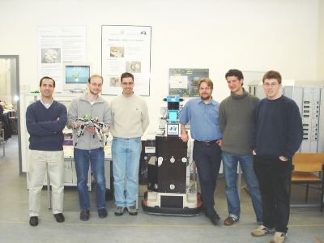
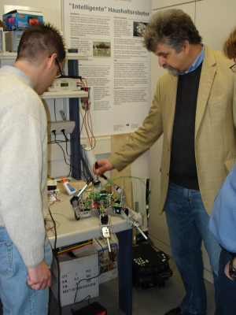
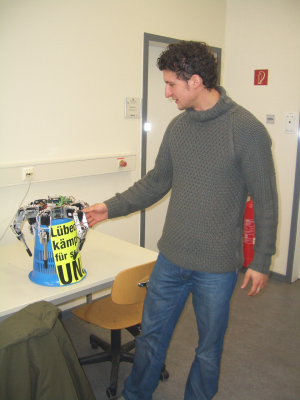
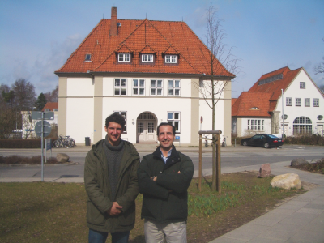
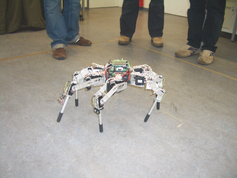
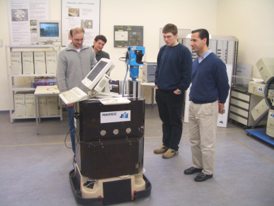
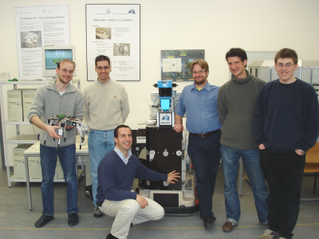
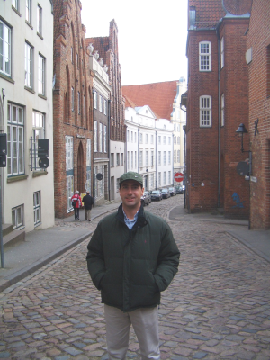
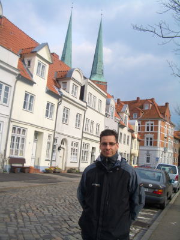

|
Visita al Instituto de Ingeniería computacional de la Universidad de Lübeck (Alemania). Abril. 2006 |
|
 |
Evento: Visita al Instituto de Ingeniería Computacional de la Universidad de Lübeck (Alemania)
Fecha: 5 de abril de 2006
El campamento base estaba consolidado en Hamburgo, y desde él, Alejandro Alonso y yo habíamos empezado nuestro tour robótico por Europa. El día anterior habíamos estado visitando el grupo de robótica de la Universidad de Bremen. Ahora tocaba hacer lo propio con el grupo de Ingeniería Computacional de Lübeck.
Desde Hamburgo hasta Lübeck sólo se tarda 1h en tren. Llegamos a la Universidad sobre las 10h y allí el Profesor Erik Maehle nos estaba esperando. No le conocíamos hasta entonces. La visita la había organizado el Dr. Houxiang Zhang. Fue una de nuestras tantas “visitas a ciegas” :-). Estuviemos tomando un café con él y nos estuvo hablando sobre sus nuevas líneas de investigación, recién comenzadas. Quieren centrarse en los sistemas de auto-detección del estado interno de los robots y así poder aumentar su fiabilidad. Para ello necesitan dotar a los robots de diferentes tipos de sensores.
En la foto de la izquierda, el Profesor Erik Maehle nos está enseñando uno de los prototipos que están usando para hacer las primeras pruebas de viabilidad. Es una especie de araña de ocho patas. En la foto de la derecha, Adam El Sayed nos está enseñando con más detalle el robot. Es parte de su tesis doctoral.
|
 |
 |
Después de enseñarnos todo el laboratorio, el Profesor Erik Maehle nos invitó a comer. Desafortunadamente tenía clases después y no podría quedarse con nosotros, por ello no tenemos una foto con él :-( Tal vez la próxima vez. Adam también vino con nosotros y luego nos hizo las demostraciones de los robots.
La universidad de Lubeck es muy tranquila. Y los edificios donde están los grupos de investigación son muy particulares. No hay más que ver la foto de la izquierda, en la que están Alejandro y Adam y al fondo el edificio del grupo de Ingeniería computacional.
Después de la comida, nos hicieron las demostraciones. En la foto de la derecha está la “araña” en funcionamiento. Lo interesante es que no utilizan gaits precalculados, sino que se van generando sobre la marcha, dependiendo de la información recibida por los sensores. En mi opinión es un proyecto muy interesante.
|
 |
 |
Otro de los robots en los que están trabajando es en Maveric (foto de la izquierda). Es un robot móvil, para navegación por espacios interiores. Dispone de una cámara, un sensor láser, micrófonos y sensores de ultrasonidos. En la página de Mavaric se pueden encontrar vídeos. Una de las aplicaciones que más me gustó es la localización por sonido. Era muy divertido. Con sólo chasquear los dedos en diferentes lugares, el robot localiza de dónde proviene la fuente de sonido y orienta la cámara. La demostración la realizó Marek Litza.
Y no podía faltar la foto de familia. De izquierda a derecha: Marek Litza, Juan González, Alejandro Alonso, el robot Maveric, Florian Mösch, Adam El Sayed y Alexander Müller-Hermes.
|
 |
 |
Sobre las 14h nuestra visita había concluido. Era hora de conocer un poco mejor Lübeck ;-). Sin duda, es un sitio que conviene visitar. En 1987 fue declarado Patrimonio de la Humanidad. Y es que no es para menos. Tiene unas casas y unas calles muy pintorescas, como se puede ver en las fotos de abajo.
|
 |
 |
Al profesor Profesor Erik Maehle, por invitarnos a compartir sus investigaciones y dedicarnos su escaso tiempo. ¡Muchas gracias!
A Adam El Sayed por dedicarnos toda la mañana y hacernos las demos de los robots. ¡Muchas gracias!
A Marek Litza por la demostración del robot Maveric. ¡Muchas gracias!
Al resto del equipo, Florian Mösch y Alexander Müller-Hermes por dedicarnos su tiempo para mostrarnos sus robots. ¡Muchas gracias!
Al Dr. Houxiang Zhang, por organizar la visita. ¡Muchas gracias!